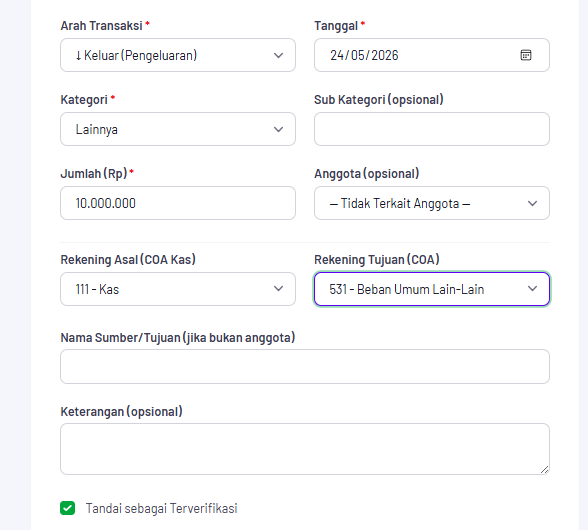
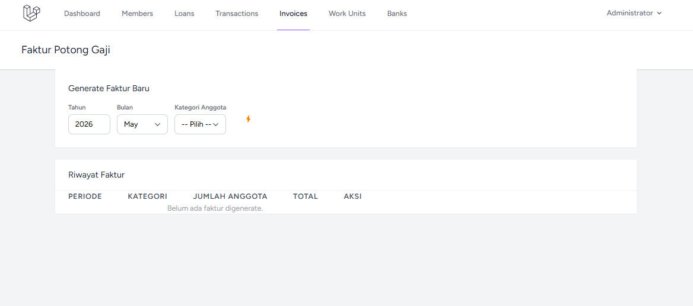

Sovereign Ledger
Sistem manajemen keuangan menyeluruh yang dibangun untuk koperasi tenaga kesehatan di Garut, Indonesia. Di-deploy secara on-premise dan aktif digunakan setiap hari.
Masalah
KPRI Warga Kesehatan Kabupaten Garut, sebuah koperasi tenaga kesehatan, membutuhkan sistem manajemen keuangan yang lengkap. Selama bertahun-tahun mereka mengandalkan Microsoft Excel, sehingga seluruh riwayat transaksi tersimpan dalam berkas lama secara terpisah. Solusi perangkat lunak yang beredar di pasaran relatif mahal dan kurang fleksibel untuk menangani logika bisnis khusus koperasi (seperti simpanan wajib, dana sosial, dan beragam skema pinjaman).
Tantangan terbesarnya adalah merancang serta men-deploy sistem keuangan skala production secara mandiri: akuntansi double-entry, role-based access control untuk lima tingkatan pengguna, pemrosesan batch bulanan otomatis, pelaporan profesional, serta migrasi penuh data historis dari berkas Excel.
Arsitektur
Mengapa Ini Sulit
- Akuntansi double-entry dari nol: Setiap transaksi wajib seimbang (balance). Diperlukan hierarki Chart of Accounts yang presisi, jejak audit (audit log), dan penguncian periode transaksi (period locking). Membangun sistem ini secara mandiri tanpa latar belakang akuntansi menuntut pemahaman domain yang mendalam.
- Migrasi data legacy: Seluruh riwayat transaksi koperasi tersimpan di dalam berkas Excel selama bertahun-tahun. Mengimpor, membersihkan, dan merekonsiliasi data ini ke skema PostgreSQL yang ternormalisasi menjadi tantangan data engineering tersendiri.
- Lima peran pengguna yang berbeda: Admin, teller, anggota, auditor, dan super-admin, masing-masing dengan hak akses, tampilan, dan alur kerja yang spesifik. Kontrol akses berbasis peran (RBAC) diatur sangat ketat mengingat sistem ini mengelola transaksi keuangan riil.
- Deployment Docker on-premise: Sistem ini beroperasi di server fisik lokal milik koperasi menggunakan PHP-FPM + Nginx + PostgreSQL dalam container Docker. Diperlengkap dengan penjadwalan berbasis Supervisor untuk batch job bulanan otomatis dan backup volume yang persisten.
Fitur Utama yang Diselesaikan
- Full Chart of Accounts: Struktur akun hierarkis dengan penegakan aturan ketat double-entry.
- Pemrosesan batch bulanan otomatis: Pemotongan simpanan wajib, kontribusi dana sosial, dan pencatatan cicilan pinjaman yang berjalan sesuai jadwal.
- Manajemen multi-pinjaman: Penjadwalan cicilan otomatis, kalkulasi bunga, dan pemantauan status pembayaran.
- Role-based access control: Pengaturan hak akses granular untuk lima tingkatan peran pengguna.
- Pelaporan profesional: Ekspor laporan PDF dengan kop resmi, file CSV, serta buku besar (ledger) siap cetak memanfaatkan Laravel DOMPDF + PhpSpreadsheet.
- Rekonsiliasi data legacy: Impor penuh dan rekonsiliasi riwayat transaksi koperasi selama bertahun-tahun dari berkas Excel.
Di Dalam Sistem
Dua tampilan dari sistem yang sudah berjalan. Form transaksi adalah tempat model akuntansinya menjadi nyata: setiap entri menyebutkan akun asal dan akun tujuan dari Chart of Accounts, sehingga jurnal sudah seimbang sejak dicatat, bukan diperbaiki belakangan.


Apa yang Akan Saya Lakukan Berbeda
- Menyiapkan automated testing sejak awal. Menjalankan perangkat lunak keuangan tanpa pengujian otomatis sangat berisiko. Saya memang menyematkan pengujian PHPUnit di pertengahan proyek, tetapi menghadirkannya sejak hari pertama, khususnya untuk validasi keseimbangan double-entry dan kalkulasi pinjaman, akan sangat menghemat waktu debugging.
- Memaksimalkan fitur bawaan Laravel. Pada awal pengembangan, saya belum sepenuhnya memanfaatkan antrean (queues), notifikasi, dan sistem event bawaan Laravel. Merefaktor pemrosesan batch menggunakan Laravel queues dan Supervisor terbukti membuat sistem jauh lebih tangguh.
- Merancang sistem role-permission yang lebih granular. Lima peran awal sudah memadai saat rilis, namun seiring pertumbuhan operasional koperasi, pengaturan izin yang lebih spesifik akan mengurangi penyesuaian khusus (custom override) pada setiap akun.
- Membangun pipeline impor data khusus. Migrasi data Excel sebelumnya dikerjakan secara semi-manual. Menyiapkan pipeline ETL yang dapat diuji ulang akan mempercepat proses rekonsiliasi data dan menjamin keterauditan.
Pelajaran Utama
Membangun sistem keuangan production untuk institusi nyata secara mandiri memberikan pembelajaran yang jauh lebih berharga daripada tutorial mana pun. Aturan ketat akuntansi double-entry memandu setiap keputusan arsitektur. Sistem ini di-deploy secara on-premise di koperasi dan digunakan setiap hari, sebuah tingkat tanggung jawab yang jauh melampaui proyek sampingan biasa.
I'm open to full-time, contract, and freelance work.